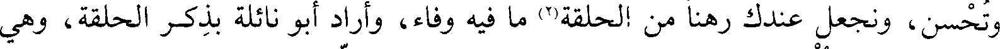
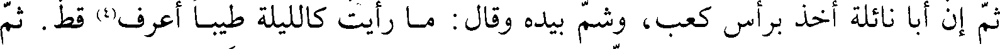
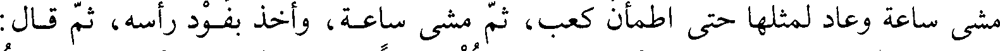
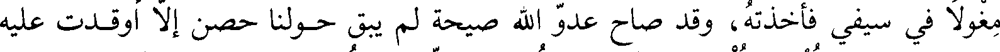
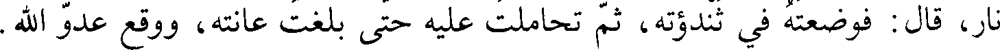
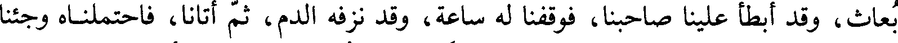
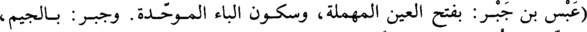
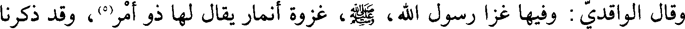
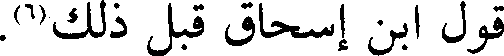

File: 000090.gt.txt (if the image is defective, simply delete all Arabic text and the line will be excluded)

لحاجة فاكتمها علي . قال: افعل. قال: كان قدوم هذا الرجل شؤما على العرب، قطع
File: 000091.gt.txt (if the image is defective, simply delete all Arabic text and the line will be excluded)
عنا السبل حتى ضاعت العيال، وجهدت البهائم. فقال كعب: قد كنت أخبرتك بهذا.
File: 000092.gt.txt (if the image is defective, simply delete all Arabic text and the line will be excluded)

قال أبو نائلة: وأريد أن تبيعنا طعاما، ونرهنك، ونوثق لك، وتحسن في ذلك. قال:
File: 000093.gt.txt (if the image is defective, simply delete all Arabic text and the line will be excluded)
ترهنوني أبناءكم؟ قال: أردت أن تفضحنا، إن معي أصحابي على مثل رأيي، تبيعهم
File: 000094.gt.txt (if the image is defective, simply delete all Arabic text and the line will be excluded)

وتحسن، ونجعل عندك رهنا من الحلقة(2) ما فيه وفاء، وأراد أبو نائلة بذكر الحلقة، وهي
File: 000095.gt.txt (if the image is defective, simply delete all Arabic text and the line will be excluded)

السلاح، أن لا ينكر السلاح إذا جاء مع أصحابه . فقال: إن في الحلقة لوفاء.
File: 000096.gt.txt (if the image is defective, simply delete all Arabic text and the line will be excluded)

فرجع أبو نائلة إلى أصحابه فأخبرهم، فأخذوا السلاح وساروا إليه، وشيعهم النبي،
File: 000097.gt.txt (if the image is defective, simply delete all Arabic text and the line will be excluded)

إلى بقي الغرقد، ودعا لهم. فلما انتهوا إلى حصن كعب، هتف به أبو نائلة، وكان
File: 000098.gt.txt (if the image is defective, simply delete all Arabic text and the line will be excluded)

كعب قريب عهد بعرس، فوثب إليه، وتحدثوا ساعة، وسار معهم إلى شعب العجوز(3).
File: 000099.gt.txt (if the image is defective, simply delete all Arabic text and the line will be excluded)

ثم إن أبا نائلة أخذ برأس كعب، وشم بيده وقال: ما رأيت كالليلة طيبا أعرف(4) قط. ثم
File: 000100.gt.txt (if the image is defective, simply delete all Arabic text and the line will be excluded)

مشى ساعة وعاد لمثلها حتى اطمأن كعب، ثم مشى ساعة، وأخذ بفود رأسه، ثم قال:
File: 000101.gt.txt (if the image is defective, simply delete all Arabic text and the line will be excluded)
اضربوا عدو الله! فاختلفت عليه أسيافهم، فلم تغن شيئا. قال محمد بن سلمة: فذكرت
File: 000102.gt.txt (if the image is defective, simply delete all Arabic text and the line will be excluded)

مغولا في سيفي فأخذته، وقد صاح عدو الله صيحة لم يبق حولنا حصن إلا أوقدت عليه
File: 000103.gt.txt (if the image is defective, simply delete all Arabic text and the line will be excluded)

نار، قال: فوضعته في ثندوته، ثم تحاملت عليه حتى بلغت عانته، ووقع عدو الله .
File: 000104.gt.txt (if the image is defective, simply delete all Arabic text and the line will be excluded)

وقد أصيب الحارث بن أوس بن معاذ، أصابه بعض أسيافنا، قال: فخرجنا على
File: 000105.gt.txt (if the image is defective, simply delete all Arabic text and the line will be excluded)

بعاث، وقد أبطأ علينا صاحبنا، فوقفنا له ساعة، وقد نزفه الدم، ثم أتانا، فاحتملناه وجئنا
File: 000106.gt.txt (if the image is defective, simply delete all Arabic text and the line will be excluded)
به النبي، صعلم، فأخبرناه بقتل عدو الله، وتفل على جرح صاحبنا، وعدنا إلى أهلينا،
File: 000107.gt.txt (if the image is defective, simply delete all Arabic text and the line will be excluded)

فأصبحنا وقد خافت يهود، لوقعتنا بعدو الله فليس بها يهودي إلا وهو يخاف على نفسه.
File: 000108.gt.txt (if the image is defective, simply delete all Arabic text and the line will be excluded)

قال: وقال رسول الله، صعلم : (من ظفرتم به من رجال يهود فاقتلوه). فوثب محيصة
File: 000109.gt.txt (if the image is defective, simply delete all Arabic text and the line will be excluded)

ابن مسعود على ابن سنينة اليهودي، وهو من تجار يهود، فقتله، وكان يبايعهم، فقال له
File: 000110.gt.txt (if the image is defective, simply delete all Arabic text and the line will be excluded)

أخوه حويصة، وهو مشرك: يا عدو الله قتلته! أما والله لرب شحم في بطنك من ماله!
File: 000111.gt.txt (if the image is defective, simply delete all Arabic text and the line will be excluded)

وضربه، فقال محيصة: لقد أمرني بقتله من لو أمرني بقتلك لقتلتك. قال: فوالله إن كان
File: 000112.gt.txt (if the image is defective, simply delete all Arabic text and the line will be excluded)

لأول إسلام حويصة. فقال: إن دينا بلغ بك ما أرى لعجب. ثم أسلم(1).
File: 000113.gt.txt (if the image is defective, simply delete all Arabic text and the line will be excluded)

(عبس بن جبر: بفتح العين المهملة، وسكون الباء الموحدة. وجبر: بالجيم،
File: 000114.gt.txt (if the image is defective, simply delete all Arabic text and the line will be excluded)
والباء الموحدة. وسنينة: تصغير سن).
File: 000115.gt.txt (if the image is defective, simply delete all Arabic text and the line will be excluded)

وفي ربيع الأول منها تزوج عثمان بن عفان أم كلثوم بنت النبي، صلى الله عليه وآله وسلم.
File: 000116.gt.txt (if the image is defective, simply delete all Arabic text and the line will be excluded)
جمادى الآخرة(2).
File: 000117.gt.txt (if the image is defective, simply delete all Arabic text and the line will be excluded)

وفيها ولد السائب بن زيد(3) ابن أخت نمير(4).
File: 000118.gt.txt (if the image is defective, simply delete all Arabic text and the line will be excluded)

وقال الواقدي: وفيها غزا رسول الله، صعلم، غزوة أنمار يقال لها ذو امر(5)، وقد ذكرنا
File: 000119.gt.txt (if the image is defective, simply delete all Arabic text and the line will be excluded)

قول ابن إسحاق قبل ذلك(6) .
To Save: `Ctrl+s`, make sure to choose `Webpage, complete`!